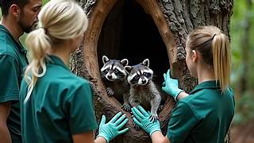

Every minute matters when an animal is injured, lost or abandoned. Report animals that need help and our rescue community will work together to provide care, medical support and shelter.

Share the location and details of the animal that needs help.
Our volunteers reach the place and safely rescue the animal.
Animals receive medical care, food and temporary shelter.
If an animal is seriously injured, contact our emergency rescue team immediately. Our volunteers are available 24/7 for urgent rescue requests.
+91 98765 43210
help@pawsitiveimpact.org
Available Across Your City
Place clean drinking water near the animal if it is safe to approach.
Avoid shouting or chasing the animal. Stay calm and keep others away.
If the animal is near a road, carefully warn vehicles while keeping yourself safe.
Capture clear pictures to help volunteers identify the condition quickly.
Animals Rescued
Active Volunteers
Successful Treatments
Animals Adopted
Speak softly and avoid sudden movements.
Protect yourself while helping injured animals.
Contact local veterinarians if the injury is serious.
A calm and caring attitude helps frightened animals feel safe.
Most rescue requests are reviewed within a few minutes. Response time depends on volunteer availability and distance.
Only if it is safe. Injured or frightened animals may bite or run away. Contact trained rescuers whenever possible.
Community rescue assistance is provided free of charge through volunteers and partner organizations.